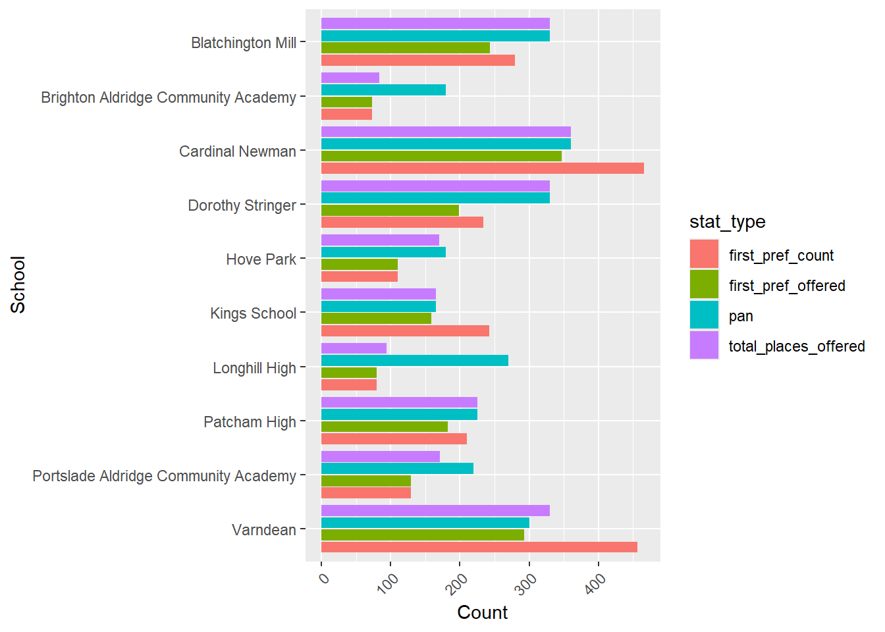
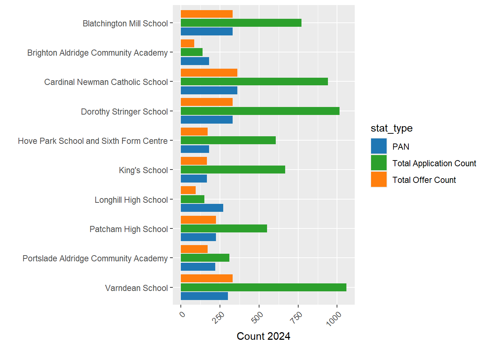
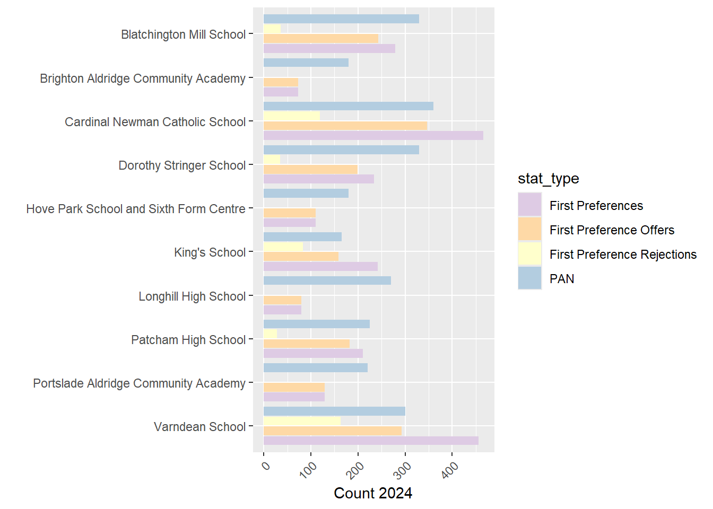
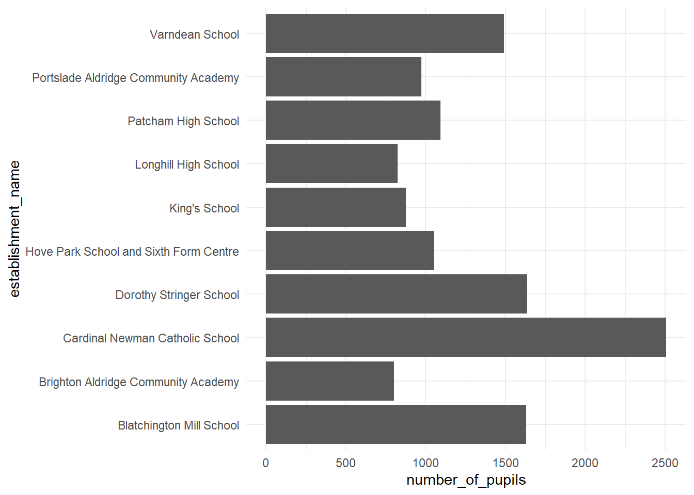
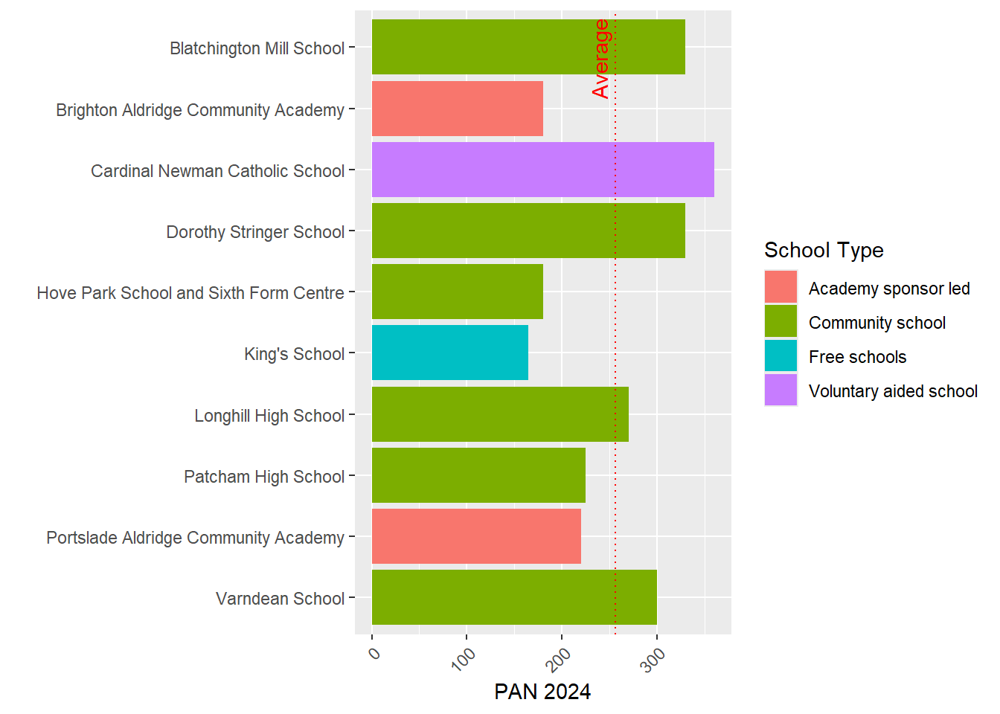
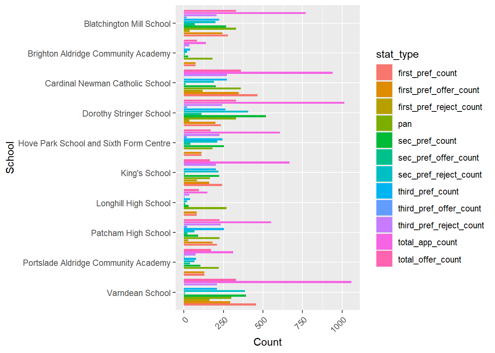

Week 2 of the engagement (‘it’s not a consultation!’) exercise
On this page I will include some additional supporting data visualisations.
Firstly some visualisation of the allocation of Year 7 places across the city
Data taken from here - https://www.brighton-hove.gov.uk/allocation-factsheet-year-7-places-september-2024
Not much to see here yet, but I will get there with some more interesting bits - including some spatial interaction / gravity modelling to show how much heavy-lifting the present catchments may already be doing on the equity side of things - hope to get to it by the end of the week.
Terminology and Background
PAN - Published Admission Number. This is the number of pupils a school is permitted to allow to enter a school in Year 7.
FSM - Free School Meals. This is the proportion of pupils in a school or residential area that receive free school meals because their household income is below a certain threshold. It is a widely used measure of social deprivation.
The PAN Problems
It has become clearer to me over the last week that one of the big issues in this whole consultation process is the PAN - both the total PAN in different years, which relates to population projections produced by the Council, and the individual school-level PANs which affect how many pupils a school can admit at year 7. I will take each in turn, but first some local background.
In most secondary schools in Brighton (Stringer, Varndean, Hove Park, Blatchington, Patcham, Longhill) the PAN is set by the council.
Religious and Free Schools such as Cardinal Newman and King’s School are allowed to set their own PANs.
Academies (Brighton Aldridge Community Academy - BACA, and Portslade Aldridge Community Academy - PACA) are also allowed to set their own PANs.
One issue is that PANs for all schools contribute to the overall total number of places in the City. So if the Council is determined to reduce the number of places (PANs) in the city, if the Religious Schools and the Academies refuse to reduce their PANs and the council is wedded to reducing numbers, the only way it can do this is by cutting, proportionally, MORE places from Stringer, Varndean, Hove Park, Blatchington, Patcham, Longhill than it would have done if it could control PANs in all state funded schools in the City.
In the People Overview and Scrutiny Committee held on 9/10/2024, Councillor (Haver* NB check name, this is what it sounded like live) raised a point that a Government White Paper is on the horizon which may give local authorities the power to control ALL PANs in the near future - this could alleviate some of the issues I am about to describe, but at the moment, nothing can be done.
PANS across Brighton
The graph below shows the PANs for 2024 taken from here:
https://www.brighton-hove.gov.uk/allocation-factsheet-year-7-places-september-2024

We can see from this graph that the academy schools and King’s School have a relatively low PAN compared to other schools in the City, with Cardinal Newman enjoying a PAN well above average at 360. This represents 14% of the total places available.
As an interesting aside, we know from the 2021 Census that 30.9% of the population of Brighton identify as Christian - https://www.ons.gov.uk/census/maps/choropleth/identity/religion/religion-tb/christian?lad=E06000043 - if we believe wikipedia - https://en.wikipedia.org/wiki/Religion_in_the_United_Kingdom - 13% of Christians in the UK are Catholic. So if we apply that percentage to Brighton, we can expect 3.9% of the population to be Roman Catholic. But 14% of the school places can be reserved for Catholic Children as a priority. I’ll just leave that there to sink in!
PANS vs Applications and Intake
The graph below includes exactly the same numbers as above, but this time contextualises them relative to the total number of applications each school had in 2024 and the number of places that were actually offered to students that year.
filtered_admissions <- admissions_long %>%
filter(stat_type %in% c("pan", "total_offer_count", "total_app_count"))
ggplot(filtered_admissions, aes(x = reorder(school, -as.numeric(factor(school))), y = stat)) +
geom_bar(aes(fill = stat_type), stat = "identity", position = "dodge2") +
xlab("") +
ylab("Count 2024") +
theme(axis.text.x = element_text(angle = 45, hjust = 1)) +
coord_flip() +
scale_fill_manual(values = c("pan" = "#1f77b4", "total_offer_count" = "#ff7f0e", "total_app_count" = "#2ca02c"),
labels = c("pan" = "PAN", "total_offer_count" = "Total Offer Count", "total_app_count" = "Total Application Count"))
A couple of things to point out:
Total Applications include all 1st, 2nd and 3rd choices for each school. It’s likely that schools in multi-school catchments may receive both first and second choices, potentially artificially inflating that number relative to the schools in single school catchments, so bear that in mind, however it can still be viewed as a crude measure of demand. I will disaggregate 1st, 2nd, and 3rd choices in some other graphs below.
All schools within multi-school catchments are very popular and are able to easily fill their offer numbers and probably could at least twice over - which is useful context when considering PAN reductions.
Some schools in Brighton received low numbers of applications. For BACA and Longhill, the numbers of applications they received were BELOW their PANs. These were not popular schools in 2024.
For BACA and Longhill, their total offer numbers were also below their PANs. This means the schools were very under-subscribed and had excess capacity.
First Preferences, Offers and Ratios
filtered_admissions <- admissions_long %>%
filter(stat_type %in% c("pan", "first_pref_count", "first_pref_offer_count", "first_pref_reject_count"))
ggplot(filtered_admissions, aes(x = reorder(school, -as.numeric(factor(school))), y = stat)) +
geom_bar(aes(fill = stat_type), stat = "identity", position = "dodge2") +
xlab("") +
ylab("Count 2024") +
theme(axis.text.x = element_text(angle = 45, hjust = 1)) +
coord_flip() +
scale_fill_manual(values = c("pan" = "#b3cde0", "first_pref_count" = "#decbe4", "first_pref_offer_count" = "#fed9a6", "first_pref_reject_count" = "#ffffcc"),
labels = c("pan" = "PAN", "first_pref_count" = "First Preferences", "first_pref_offer_count" = "First Preference Offers", "first_pref_reject_count" = "First Preference Rejections"))
Small Schools in England and Wales
The histogram below shows the distribution of the number of pupils in open, state funded 11-16 secondary schools in England and Wales. The red and cyan lines show the number of pupils at Longhill and PACA respectively.
I have not included BACA in this graph as it is an 11-19 school and thus not directly comparable, however the recorded number on its role in 2024 is 802 - so a much smaller school than Longhill.

Closing Schools in Brighton and Hove with low numbers
The council has repeated cited at the in person consultation meeting I attended and again in the People Overview and Scrutiny Committee held on 9/10/2024 that it is not sustainable to have schools with low numbers of pupils. In the Scrutiny meeting, Councillor Haver asked a question about the minimum viability of schools.
Councillor Collier and Colleague commented that is was their view that 180 pupils was the minimum single year PAN they would consider viable.
brighton_sec_schools %>%
ggplot(., aes(x = number_of_pupils, y = establishment_name)) +
geom_bar(stat = "identity") +
theme_minimal()


#get some LSOA pop weighted centroids for E&W from ONS
url <- "https://services1.arcgis.com/ESMARspQHYMw9BZ9/arcgis/rest/services/LLSOA_Dec_2021_PWC_for_England_and_Wales_2022/FeatureServer/0/query?outFields=*&where=1%3D1&f=geojson"
# Read the GeoJSON file into an sf object
sf_point_data <- st_read(url)Reading layer `OGRGeoJSON' from data source
`https://services1.arcgis.com/ESMARspQHYMw9BZ9/arcgis/rest/services/LLSOA_Dec_2021_PWC_for_England_and_Wales_2022/FeatureServer/0/query?outFields=*&where=1%3D1&f=geojson'
using driver `GeoJSON'
Simple feature collection with 35672 features and 3 fields
Geometry type: POINT
Dimension: XY
Bounding box: xmin: -6.311076 ymin: 49.916 xmax: 1.754594 ymax: 55.78286
Geodetic CRS: WGS 84#save locally
st_write(sf_point_data, here("data", "EW_LSOA_PW_Centoid.geojson"), append = TRUE)Updating layer `EW_LSOA_PW_Centoid' to data source `E:/BH_Secondary_Admissions_Analysis/data/EW_LSOA_PW_Centoid.geojson' using driver `GeoJSON'
Updating existing layer EW_LSOA_PW_Centoid
Writing 35672 features with 3 fields and geometry type Point.#brighton school data
brighton_school_children <- read_csv(here("data", "BrightonLSOASchoolChildren.csv"))Rows: 165 Columns: 17
── Column specification ────────────────────────────────────────────────────────
Delimiter: ","
chr (2): lsoa_name, lsoa_code
dbl (15): total_people, total_pct, total_bh_prop, 5_9_total, 5_9_lsoa_pct, 5...
ℹ Use `spec()` to retrieve the full column specification for this data.
ℹ Specify the column types or set `show_col_types = FALSE` to quiet this message.btn_lsoa_list <- as.data.frame(brighton_school_children$lsoa_code) %>%
clean_names()
lsoa_btn_pw_centroids <- sf_point_data %>%
st_transform(27700) %>%
clean_names %>%
select(lsoa21cd, geometry)
lsoa_btn_pw_centroids <- lsoa_btn_pw_centroids %>% right_join(btn_lsoa_list, by = c("lsoa21cd" = "brighton_school_children_lsoa_code"))
st_write(lsoa_btn_pw_centroids, here("data", "lsoa_btn_pw_centroids.geojson"), append = TRUE)Updating layer `lsoa_btn_pw_centroids' to data source `E:/BH_Secondary_Admissions_Analysis/data/lsoa_btn_pw_centroids.geojson' using driver `GeoJSON'
Updating existing layer lsoa_btn_pw_centroids
Writing 165 features with 1 fields and geometry type Point.Reading layer `BrightonSecondaryCatchments' from data source
`E:\BH_Secondary_Admissions_Analysis\data\BrightonSecondaryCatchments.geojson'
using driver `GeoJSON'
Simple feature collection with 6 features and 2 fields
Geometry type: MULTIPOLYGON
Dimension: XY
Bounding box: xmin: 523887.8 ymin: 100896.4 xmax: 539613.4 ymax: 110190.1
Projected CRS: OSGB36 / British National GridReading layer `EW_LSOA' from data source
`E:\BH_Secondary_Admissions_Analysis\data\EW_LSOA.geojson'
using driver `GeoJSON'
Simple feature collection with 35672 features and 11 fields
Geometry type: MULTIPOLYGON
Dimension: XY
Bounding box: xmin: -6.418667 ymin: 49.86467 xmax: 1.763706 ymax: 55.81109
Geodetic CRS: WGS 84Reading layer `oa_brighton' from data source
`E:\BH_Secondary_Admissions_Analysis\data\oa_brighton.geojson'
using driver `GeoJSON'
Simple feature collection with 936 features and 10 fields
Geometry type: MULTIPOLYGON
Dimension: XY
Bounding box: xmin: 523598.1 ymin: 101780.1 xmax: 539862.4 ymax: 111919.1
Projected CRS: OSGB36 / British National GridReading layer `brighton_roads' from data source
`E:\BH_Secondary_Admissions_Analysis\data\brighton_roads.shp'
using driver `ESRI Shapefile'
Simple feature collection with 4746 features and 9 fields
Geometry type: MULTILINESTRING
Dimension: XY
Bounding box: xmin: 523824.1 ymin: 101686.4 xmax: 539547.8 ymax: 112419.1
Projected CRS: OSGB36 / British National Grid[1] "21"#travel time matrix
# Set parameters
mode = c("WALK")
max_walk_time = 90 # minutes
max_trip_duration = 90 # minutes
departure_datetime = as.POSIXct("23-05-2024 8:30:00",
format = "%d-%m-%Y %H:%M:%S",
tz = "GMT")
#note the code below already requires the h3 core matrix to be set up
# Calculate the travel time matrix by Transit
ttm_btn_lsoa_to_School = travel_time_matrix(r5r_core = r5r_core,
origins = bh_sec_sch,
destinations = brighton_lsoa_points_r5,
mode = mode,
departure_datetime = departure_datetime,
max_walk_time = max_walk_time,
max_trip_duration = max_trip_duration)Warning in assign_points_input(origins, "origins"): 'origins$id' forcefully
cast to character.Warning in assign_points_input(destinations, "destinations"): 'destinations$id'
forcefully cast to character.#join codes back to the matrix and get it ready from plotting
ttm_btn_lsoa_to_School$orig_lsoa <- brighton_lsoa_centroids$lsoa21cd[match(ttm_btn_lsoa_to_School$to_id, brighton_lsoa_centroids$fid)]
ttm_btn_lsoa_to_School$dest_sch <- brighton_sec_schools_wgs84$establishment_name[match(ttm_btn_lsoa_to_School$from_id, brighton_sec_schools_wgs84$urn)]
ttm_btn_lsoa_to_School <- ttm_btn_lsoa_to_School %>%
mutate(to_id = as.factor(to_id)) %>%
unite(od_code, orig_lsoa, to_id, sep = "_", remove = FALSE)
simple_ttm <- ttm_btn_lsoa_to_School %>%
select(orig_lsoa, to_id, travel_time_p50) %>%
rename(orig = orig_lsoa, dest = to_id, flow = travel_time_p50)
class(ttm_btn_lsoa_to_School)[1] "data.frame"simple_ttm <- na.omit(simple_ttm)
#brighton_lsoa_to_school_times <- od2line(flow = simple_ttm, zones = lsoa_btn_pw_centroids, destinations = bh_sec_sch_bng, zone_code = "orig", dest_code = "dest", zone_code_d = "id")
#brighton_lsoa_to_school_times <- od2line(flow = simple_ttm, zones = lsoa_btn_pw_centroids, destinations = bh_sec_sch_bng, zone_code = "orig", dest_code = "dest", zone_code_d = "id")
#brighton_lsoa_to_school_times <- od2line(flow = simple_ttm, zones = lsoa_btn_pw_centroids, destinations = brighton_sec_schools)
#write_csv(simple_ttm, here("data", "simple_ttm.csv"))
#st_write(brighton_sec_schools, here("data", "brighton_sec_schools.geojson"), append = TRUE)Remember VAT on private schools - look at private school numbers in the city